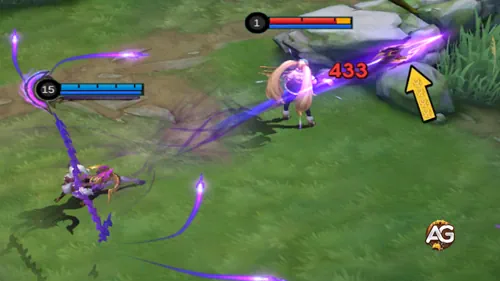
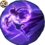
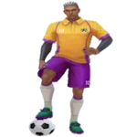

Com armas forjadas a partir de seus próprios ossos, Obsidia causa um dano implacável no campo de batalha.
Seu estilo de jogo se concentra em punir inimigos com ataques constantes, tornando-a uma finalizadora letal
no fim da partida.
Atiradoras como Obsidia brilham na Rota do Ouro porque conseguem farmar mais rápido e desbloquear
seu poder total mais cedo. Apesar de fraca no inÃcio, com os itens certos, Obsidia se torna uma fonte implacável de dano constante,
capaz de carregar sua equipe rumo à vitória.
Prioridade de Evolução das Habilidades da Obsidia - Mobile Legends: Bang Bang
Prioridade simples e prática das habilidades da Obsidia: descubra quais evoluir primeiro e por quê, explicado passo a passo para jogadores que precisam de orientação clara.
Prioridade de Evolução:Muito Alta – Maximize esta primeiro para aumentar seu dano consistente e fortalecer cada ataque básico.

Agulha Óssea Abissal — principal fonte de dano e ativador da passiva.

Obsidia - Fusão Sombria Fantasmagórica
Como funciona (simples): Esta habilidade concede um aumento de velocidade de movimento (bem curto),
permitindo que Obsidia persiga ou se reposicione. É ótima para grudar nos inimigos ou escapar, mas não gera tanto dano direto
quanto a Agulha Óssea Abissal.
Prioridade de Evolução:Alta – Sempre evolua nos nÃveis disponÃveis (4/8/12). Ela muda batalhas e oferece forte controle e janelas de explosão de dano.
Caçada de Ossos — atordoamento, aprisionamento e grande controle de luta.
Resumo Rápido de Prioridade
Ordem de evolução:
Agulha Óssea Abissal — Muito Alta
Caçada de Ossos (Ultimate) — Alta (pegue nos nÃveis 4/8/12)
(Retorno ao Osso = Passiva — não possui evolução)
Melhores Combos da Obsidia em Mobile Legends
Os combos podem ser simples este guia mostra, passo a passo, os melhores combos de dano da Obsidia, perfeito para iniciantes que querem jogar com clareza e confiança.
Combos na Rota
Passo 1: Agulha Óssea Abissal
Use sua 1ª habilidade para farmar e incomodar com segurança. Pense nisso como “bater e recuar†acerte minions e inimigos aos poucos para acumular sua passiva,
deixando seus ataques básicos muito mais fortes depois.
Passo 2: Fusão Sombria Fantasmagórica
Use esse breve impulso de velocidade para encurtar distância ou escapar. Se estiver inseguro, treine usar a habilidade para reposicionar após um poke, em vez de se jogar direto na luta.
Comece incomodando com ataques básicos e sua 1ª habilidade para acumular a passiva com segurança. Imagine que você está desgastando uma parede dano lento e constante.
Passo 2: Fusão Sombria Fantasmagórica
Reposicione-se com sua 2ª habilidade caso os inimigos avancem sobre você ou se precisar de um ângulo melhor. É sua rede de segurança use com calma, não no desespero.
Passo 3: Ultimate + Finalização
Quando o inimigo estiver sob foco da sua equipe, use a Caçada de Ossos para prender ou atordoar um alvo-chave, depois finalize com ataques básicos fortalecidos. Um ultimate bem-timado pode vencer lutas.
Obsidia brilha contra heróis que dependem de avanços e teletransportes. Seu Ultimate cancela a mobilidade deles, transformando ameaças ágeis em presas fáceis.
Freya
Freya depende de seu salto e explosão de curto alcance. O Ultimate da Obsidia cancela seu pulo, forçando-a a uma luta direta que ela não consegue vencer facilmente.
Hayabusa
Hayabusa depende de suas sombras para mobilidade e dano. Obsidia o prende com seu Ultimate, impedindo a fuga e punindo-o duramente.
Lancelot
Lancelot sobrevive encadeando avanços para evitar dano. O Ultimate da Obsidia desativa esses movimentos, deixando-o exposto e incapaz de superá-la.
Como Counterar a Obsidia em Mobile Legends
A Obsidia pode ser vulnerável no inÃcio do jogo, especialmente contra heróis com forte pressão na rota. Descubra quais heróis exploram suas fraquezas de forma eficaz.
Counters
Counterada por: Obsidia sofre durante a fase inicial da rota, ficando vulnerável contra Atiradores com forte early game, como Bruno e Layla.
Bruno

O poke inicial e os crÃticos do Bruno pressionam a Obsidia antes que ela consiga escalar com itens, dificultando seu farm seguro ou uma resposta eficaz nas trocas.
Os ataques de longo alcance da Layla podem incomodar a Obsidia no inÃcio do jogo, forçando-a a jogar de forma defensiva e atrasando sua progressão de itens.
Prós e Contras da Obsidia - Mobile Legends: Bang Bang
✅ Prós
Alto dano contÃnuo com seus Ataques Básicos e os Fragmentos Ósseos da Passiva.
Ultimate (Caçada de Ossos) desabilita a mobilidade inimiga, sendo muito eficaz contra heróis de dash/blink.
Excelente escalonamento no late game, já que farma equipamentos rapidamente.
Bom controle de rota e poke com Agulha Óssea Abissal.
Boa mobilidade e reposicionamento com Fusão Sombria Fantasmagórica.
⌠Contras
Fraca no early game; pode ser pressionada por Atiradores ou Lutadores agressivos.
Depende muito do farm e dos itens para atingir seu potencial máximo.
Vulnerável a controles de grupo (CC) que podem interromper seus combos.
Exige posicionamento cuidadoso; usar mal o Ultimate ou a 2ª habilidade pode deixá-la exposta.
Dependente dos acúmulos da Passiva; ataques básicos sozinhos são fracos sem eles.
Conclusão
Dominar a Obsidia em Mobile Legends exige paciência, bom tempo de execução e entendimento de seus combos. Foque em acumular a Passiva com pokes seguros, use seu Ultimate com sabedoria para neutralizar alvos importantes e reposicione-se de forma eficaz com a Fusão Sombria Fantasmagórica. Apesar de vulnerável no inÃcio do jogo, seu dano e controle no late game podem mudar o rumo das batalhas. Com prática e bom posicionamento, você pode dominar a Rota do Ouro e transformar a Obsidia em um trunfo poderoso para sua equipe.
Você gostou do nosso Guia da Obsidia para MLBB? Há algo que não entendeu ou gostaria de sugerir mudanças? Convidamos você a se juntar à nossa sessão de comentários na página do Alexandre Games Blog. Não hesite em expressar sua opinião, clarificar suas dúvidas e compartilhar sua sugestões. Clique no botão abaixo para começar:


 Guia Phoveus Mobile Legends
Guia Phoveus Mobile Legends
 Guia Suyou Mobile Legends
Guia Suyou Mobile Legends
 Guia Tigreal Mobile Legends
Guia Tigreal Mobile Legends
 Guia Vexana Mobile Legends
Guia Vexana Mobile Legends
 Guia Zetian – Domine a Rota do Meio com este Mago em Mobile Legends
Guia Zetian – Domine a Rota do Meio com este Mago em Mobile Legends

 Guia Zhuxin Mobile Legends
Guia Zhuxin Mobile Legends